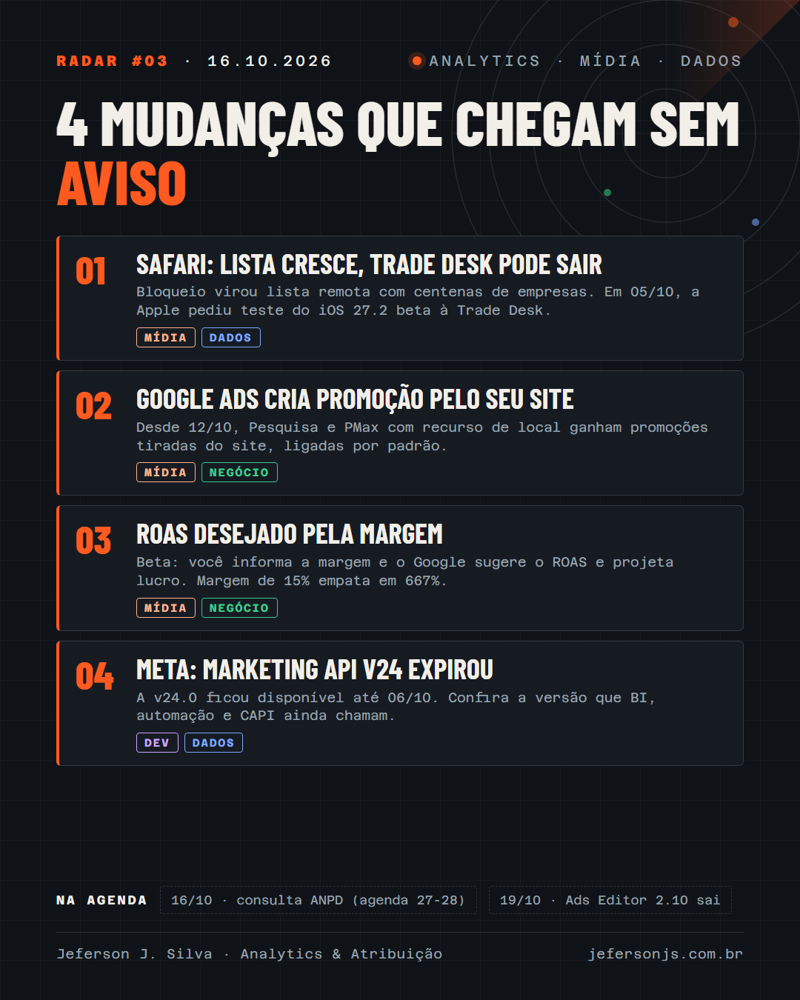

A lista de bloqueio do Safari cresce enquanto a Apple testa liberar a Trade Desk, promoções automáticas e tROAS pela margem no Google Ads e o fim da v24 da Marketing API da Meta.

Duas mudanças no Google Ads que mexem no anúncio e no lance, uma reviravolta no bloqueio do Safari e um prazo vencido na API da Meta.
Em 02/10, a AdExchanger relatou que a lista de bloqueio do Safari virou uma base remota com centenas de empresas de ad tech, CDPs e grafos de identidade, que a Apple atualiza sem lançar nova versão do iOS. A lista não foi publicada. Em 05/10, a Apple pediu à Trade Desk, no próprio bug do WebKit, que testasse o beta do iOS 27.2. O bug segue aberto e não está claro se o domínio de entrega da Trade Desk sai da lista na versão final.
Desde 12/10, campanhas de Pesquisa e Performance Max com recurso de local e sem recurso de promoção recebem promoções tiradas automaticamente do site do anunciante. O recurso vem ligado por padrão. O e-mail do Google com o aviso foi publicado pela Search Engine Roundtable em 05/10.
Em 06/10, a Search Engine Land mostrou um beta em que o anunciante informa a margem média da campanha e o Google sugere o ROAS desejado, com projeção semanal de cliques, receita, investimento e lucro. Com margem de 15%, o ponto de equilíbrio fica em ROAS de 667%. Ainda não há página de ajuda do Google sobre o recurso.
Pelo changelog oficial, a v24.0 da Marketing API ficou disponível até 06/10/2026.
Promoção automática no Google Ads: vocês vão deixar ligada ou desligar no primeiro dia?
30 minutos, de graça. Entro nas suas plataformas e mostro os três problemas mais críticos de mensuração.
Quero meu diagnóstico grátis →